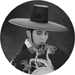

Song Joong-Ki
Biography
 Song Joong-ki ( born September 19, 1985) is a South Korean actor, model and host. He rose to fame in the historical drama Sungkyunkwan Scandal (2010) and the variety show Running Man as one of the original cast members when it premiered in 2010. Song played his first TV leading role in the melodrama The Innocent Man (2012). He has also starred in feature films, notably as the title character in the box office hit A Werewolf Boy (2012).
After his mandatory military service, he took on the lead role in the massive pan-Asia hit 2016 drama, Descendants of the Sun. The drama was incredibly popular with the final episode recording a 38.8% viewership rating nationwide and 41.6% in the capital area according to Nielsen Korea.Song experienced a tremendous growth in his popularity throughout Asia and the drama established him as a top Hallyu star.
Song Joong-ki ( born September 19, 1985) is a South Korean actor, model and host. He rose to fame in the historical drama Sungkyunkwan Scandal (2010) and the variety show Running Man as one of the original cast members when it premiered in 2010. Song played his first TV leading role in the melodrama The Innocent Man (2012). He has also starred in feature films, notably as the title character in the box office hit A Werewolf Boy (2012).
After his mandatory military service, he took on the lead role in the massive pan-Asia hit 2016 drama, Descendants of the Sun. The drama was incredibly popular with the final episode recording a 38.8% viewership rating nationwide and 41.6% in the capital area according to Nielsen Korea.Song experienced a tremendous growth in his popularity throughout Asia and the drama established him as a top Hallyu star.
Filmography
Film:
A Frozen Flower/2008/Yoo Ha
Five Senses of Eros/2009/Daniel H. Byun/Hur Jin-ho/Yoo Young-sik/Oh Ki-hwan/Min Kyu-dong
The Case of Itaewon Homicide/2009/Hong Ki-sun
Hearty Paws 2/2010/Lee Jung-chul
Penny Pinchers/2011/Kim Jung-hwan
Pengi and Sommi/2012
The Grand Heist (cameo)/2012/Kim Joo-ho
A Werewolf Boy/2012/Jo Sung-hee
Battleship/2016
Television series:
Get Karl! Oh Soo-jung/2007/Park Hyung-ki,Jin Hyuk,Kwon Hyuk-chan
Love Racing/2008
My Precious You/2008
Triple/2009/Lee Yoon-jung
My Fair Lady (cameo)/2009/Ji Young-soo
Will It Snow for Christmas?/2009/Choi Moon-suk
Obstetrics and Gynecology Doctors/2010
Sungkyunkwan Scandal/2010/Kim Won-seok,Hwang In-hyuk
Deep Rooted Tree/2011/Jang Tae-yoo
The Innocent Man/2011/Kim Jin-won,Lee Na-jeong
Descendants of the Sun/2016/Lee Eung-bok,Baek Sang-hoon
The Sound of Heart (cameo)/2016
Photogallery